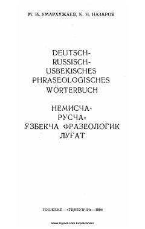

NFNemis, rus va oʻzbek tillaridagi frazeologik iboralar toʻplami.
Ushbu lugʻat nemis tilidagi eng koʻp qoʻllanadigan frazeologik iboralarni rus va oʻzbek tillaridagi muqobillari bilan jamlagan. Kitobda iboralarning qoʻllanish oʻrni, uslubiy xususiyatlari va misollar keltirilgan boʻlib, til oʻrganuvchilar uchun muhim qoʻllanma hisoblanadi.